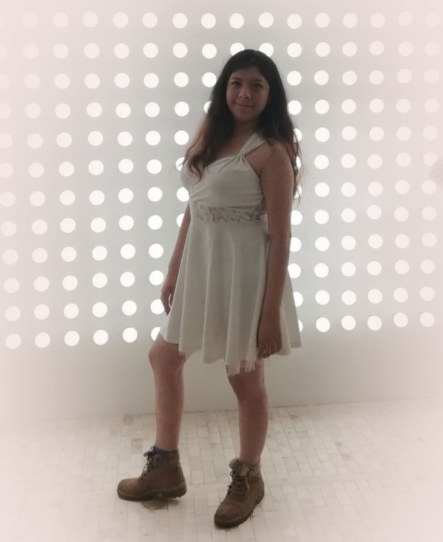

Expericencia.
Empecé con mi historial laboral desde el 2014 en el servicio social de un centro de investigación de mercado, realizaba entrevistas de satisfacción para entidades bancarias. Después de eso trabajé por 4 años en una empresa de mantenimiento, enfocada en la administración, realicé desde facturación, hasta reparación de equipos electrónicos, liderar equipos de trabajo, manejo de redes sociales, marketing, resolución de problemas de clientes así como ventas y primer contacto. Hubo momentos dentro de esta empresa en que me encargué de toda la administración.
En 2018 inicié un trabajo formal dentro de una empresa de contact center para realizar ventas de una compañia de Taxis, llegué a obtener 300 ventas en 15 días